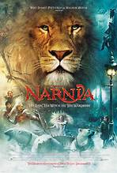

Beranda

Biodata Film
| Tahun | Judul | Episode | Rating |
|---|---|---|---|
| 2026 | Hidden Love | 24 | 95 | 2025 | Moonlight Mystique | 40 | 98 | 2024 | Moana 2 | 1 | 98 | 2005 | The Chronicles of Narnia: The Lion, the Witch and the Wardrobe | 1 | 98 |

| Tahun | Judul | Episode | Rating |
|---|---|---|---|
| 2026 | Hidden Love | 24 | 95 | 2025 | Moonlight Mystique | 40 | 98 | 2024 | Moana 2 | 1 | 98 | 2005 | The Chronicles of Narnia: The Lion, the Witch and the Wardrobe | 1 | 98 |